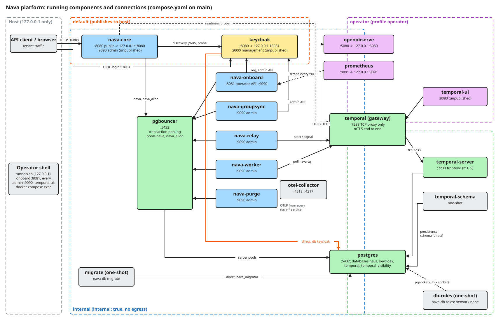

System map
Every container that docker compose up starts from compose.yaml on main, the network each one sits on, and who talks to whom. Each component has its own page (listed below) with its listeners, database role and the work that introduced it. How the code inside a service is organised is not covered here.
The map

The SVG embeds its Excalidraw scene. To change it, open the file in Excalidraw, edit it, and export again with Embed scene. If the SVG and compose.yaml disagree, the Mermaid version below was updated with the code and is the one to trust.
flowchart LR
subgraph host["Host, 127.0.0.1 only"]
client["API client / browser"]
op["Operator shell (tunnels.sh)"]
end
subgraph internal["internal (no egress)"]
core["nava-core<br/>:8080 public, :9090 admin"]
kc["keycloak<br/>:8080, :9000 mgmt"]
onboard["nava-onboard<br/>:8081, :9090"]
gs["nava-groupsync<br/>:9090"]
relay["nava-relay<br/>:9090"]
worker["nava-worker<br/>:9090"]
purge["nava-purge<br/>:9090"]
pgb["pgbouncer<br/>:5432"]
migrate["migrate (one-shot)"]
otel["otel-collector<br/>:4318, :4317"]
oo["openobserve<br/>:5080 (operator)"]
prom["prometheus<br/>:9091 (operator)"]
tproxy["temporal (gateway)<br/>:7233"]
pg[("postgres<br/>:5432")]
end
subgraph backplane["temporal-backplane"]
tserver["temporal-server<br/>:7233 mTLS"]
tschema["temporal-schema (one-shot)"]
end
subgraph operator["operator (profile operator)"]
ui["temporal-ui<br/>:8080"]
end
dbroles["db-roles (one-shot)<br/>network none"]
client -->|"127.0.0.1:18080"| core
client -->|"OIDC login 127.0.0.1:18081"| kc
op -. "tunnels" .-> onboard
op -. "tunnel 18233" .-> ui
core -->|"discovery, JWKS, health"| kc
onboard -->|"org + admin API"| kc
gs -->|"admin API read"| kc
core --> pgb
onboard --> pgb
gs --> pgb
relay --> pgb
worker --> pgb
purge --> pgb
pgb -->|"server pools"| pg
migrate -->|"direct, nava_migrator"| pg
kc -->|"direct, db keycloak"| pg
dbroles -. "pgsocket Unix socket" .-> pg
relay -->|"start / signal"| tproxy
worker -->|"poll nava-tq"| tproxy
core -. "readiness probe" .-> tproxy
ui --> tproxy
tproxy -->|"tcp 7233"| tserver
tserver -->|"persistence, direct"| pg
tschema -->|"schema, direct"| pg
otel -->|"OTLP/HTTP"| oo
prom -. "scrape :9090" .-> core
Not drawn, to keep the map readable: every nava-* service exports OTLP to otel-collector:4318, and Prometheus scrapes the :9090 admin listener of all six nava-* services (deploy/compose/prometheus/prometheus.yml).
Networks
| Network | Kind | Who is on it |
|---|---|---|
default |
publishes ports to the host (loopback only) | nava-core, keycloak |
internal |
internal: true, no egress |
every backing service and every nava-* service |
operator |
not internal, so the UIs can publish on 127.0.0.1 | temporal-ui, temporal (gateway), openobserve, prometheus |
temporal-backplane |
internal: true |
postgres, temporal-schema, temporal-server, temporal (gateway) |
No platform process joins temporal-backplane, so the server's internode and membership ports have no route from internal. db-roles has no network (network_mode: none); it reaches PostgreSQL only over the Unix socket on the pgsocket volume, which only postgres and db-roles mount. deploy/compose/compose.internal.yaml makes default and operator internal as well.
Rules every edge follows
- Every
nava-*service reaches PostgreSQL only through PgBouncer. The direct connections aremigrate(asnava_migrator, which PgBouncer refuses),db-roles(the superuser, over the socket), Temporal's persistence (temporal-schema,temporal-server) and Keycloak's own database. - Clients reach Temporal only through the
temporalgateway attemporal:7233, which forwards totemporal-server. The workflow edges arenava-relay(start and signal) andnava-worker(pollnava-tq).nava-coredials the gateway only for its readiness probe.nava-onboard,nava-groupsyncandnava-purgehave no Temporal edge. - Among the
nava-*services, onlynava-corepublishes a port (127.0.0.1:18080). No:9090admin listener is published. The other published ports are Keycloak (127.0.0.1:18081) and, with theoperatorprofile, OpenObserve (127.0.0.1:5080) and Prometheus (127.0.0.1:9091), all on loopback. - Everything else is reached from the host through
docs/acceptance/guide/tools/tunnels.sh(local forwards on 127.0.0.1) ordocker compose exec.
Components
| Component | Kind | Listeners (container) | Host port | DB role(s) | Introduced by |
|---|---|---|---|---|---|
| postgres | backing | :5432, Unix socket |
none | (server) | PLAN-001 T02 (TICK-51) |
| pgbouncer | backing | :5432 |
none | pgbouncer_auth (lookup) |
PLAN-001 T02 (TICK-51) |
| nava-db: db-roles, migrate | one-shot | none | none | superuser; nava_migrator |
PLAN-001 T03 |
| keycloak | backing | :8080, :9000 management |
127.0.0.1:18081 |
keycloak |
PLAN-001 T02 (TICK-51) |
| temporal-schema | one-shot | none | none | temporal |
PLAN-001 T28 |
| temporal-server | backing | :7233 frontend (+ internode) |
none | temporal |
PLAN-001 T28 |
| temporal (gateway) | backing | :7233 |
none | none | PLAN-001 T02, gateway since T28 |
| temporal-ui | operator profile | :8080 |
none (tunnel 18233) | none | PLAN-001 T28 |
| otel-collector | backing | :4318, :4317, :13133 health |
none | none | PLAN-001 T02 (TICK-51) |
| openobserve | operator profile | :5080 |
127.0.0.1:5080 |
none | TICK-634 |
| prometheus | operator profile | :9091 |
127.0.0.1:9091 |
none | TICK-330 |
| nava-core | platform | :8080 public, :9090 admin |
127.0.0.1:18080 |
nava_app, nava_audit_reader |
PLAN-001 T02 (TICK-51) |
| nava-worker | platform | :9090 admin |
none | nava_worker |
PLAN-001 T31b (TICK-159) |
| nava-relay | platform | :9090 admin |
none | nava_relay |
PLAN-001 T30b (TICK-85) |
| nava-purge | platform | :9090 admin |
none | nava_purge |
PLAN-001 T13 (TICK-143) |
| nava-onboard | platform | :8081 operator API, :9090 admin |
none | nava_app, nava_onboard |
PLAN-001 T21 (TICK-234) |
| nava-groupsync | platform | :9090 admin |
none | nava_groupsync |
PLAN-001 T25 (TICK-234) |
"Introduced by" names the work that first added the service to the compose file. The story manifest does not list these yet, so they are named in prose here, not linked.
temporal-schema (one-shot)
Runs setup-schema.sh from the nava/temporal-server image once per up. It connects straight to PostgreSQL as temporal (not through PgBouncer) and creates or upgrades the schema in the temporal and temporal_visibility databases, then exits. It is on temporal-backplane only; temporal-server waits for it to complete.
Binaries that are not services
| Binary | What it is | Covered on |
|---|---|---|
cmd/nava-db |
the db-roles and migrate one-shots |
nava-db |
cmd/nava |
offline operator CLI, nava audit verify <file>; no database, no network |
the audit-chain page in Security and the Operations section |
cmd/openapi-compat |
CI tooling: fails when api/openapi.yaml removes or narrows anything |
not a runtime component |
cmd/demo-outbox, cmd/demo-interpreter |
demos run by scripts under scripts/dev/ |
excluded: not part of the running platform |